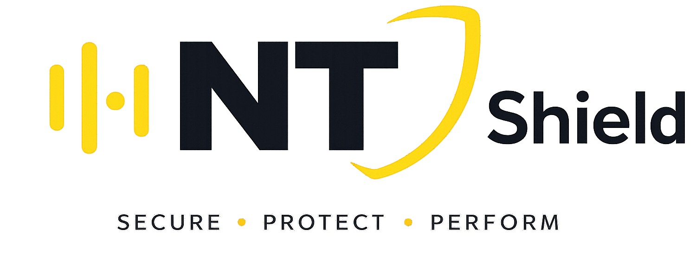

GLOBAL THREAT TELEMETRY • LIVE FEED
Central v—
0Threat Events
0Correlated
100%Defense Score
0Assets Protected
0/0AI Monitoring

UNIFIED AI CYBER DEFENSE AS A SERVICE
รวม Agent, Central, Threat Correlation และ AI Analyst เพื่อให้ทีมดูแลระบบเห็นเหตุการณ์สำคัญและตัดสินใจได้เร็วขึ้น
AI CYBER DEFENSE
Autonomous AI Defense Network ปกป้อง Endpoint, Server, Application, Cloud และข้อมูลสำคัญตลอด 24×7
กำลังรับข้อมูลจาก Central…
INVESTIGATE
เหตุการณ์ที่ Central เชื่อมโยงจากหลาย Agent
| Severity | Incident | Source | Destination | Time |
|---|
CORRELATE
เส้นทางและรูปแบบการโจมตีข้ามเครื่อง
PROTECT
Agent ที่ลงทะเบียนกับ Central
| Status | Host | IP | Platform | Version | Last seen |
|---|
MAP & AUTOMATE
วางระบบลูกค้าเป็นภาพเดียว แล้วผูก telemetry กับ detection workflow
EXPLAINABLE AI
คำแนะนำจากข้อมูลจริง โดยยังให้คนอนุมัติการตอบสนอง
AI Analyst วิเคราะห์และเสนอแนวทาง แต่ไม่สั่ง block IP, isolate host, stop service หรือ kill process โดยไม่มีขั้นตอนอนุมัติของ Operator
CONFIGURE
การเชื่อมต่อของ Control Center
Key ถูกส่งไปยัง Central ผ่าน HTTPS header และเก็บเฉพาะใน session storage เว้นแต่เลือก “จดจำ”